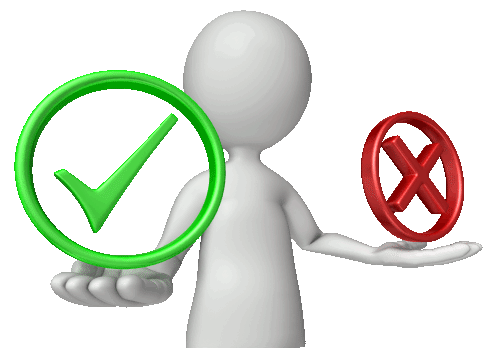

CMS-systemer
Publisert .
CMS er programvare som lar oss lage et brukergrensesnitt til redigering av et nettsted uten å skrive kode. CMS står for "Content Management System". Det finnes veldig mange CMS-løsninger, men de største er WordPress, Drupal, Joomla, Blogger, Weebly og Wix. Selv om CMS-systemer er en fantastisk teknologi, er det ikke bare fordeler. I denne artikkelen ser jeg på forskjellige fordeler og ulemper ved å bruke et CMS.
Fordeler
- Det finnes veldig mange alternative CMSer, alt til sitt bruk.
- Raskere utvikling. På grunn av templates og widgets er utviklingstiden drastisk redusert.
- Kan være mye billigere fordi utviklingstiden er kort og fordi det ikke trengs en utvikler for å vedlikeholde innholdet. Mange CMSer er dessuten gratis, de fleste mest populære er gratis.
- Trenger ikke å skrive kode, alt kan gjøres i en editor
- Slipper FTP for å legge til innhold.
- Skiller på innhold, design og funksjonalitet. Kan gi forskjellige brukere forskjellig tilgang for redigering.
- Versjonskontroll
- Mange CMSer er gode på å passe semantikk og generelt sett det som er bra for universell utforming og søkemotoroptimalisering.
Ulemper
- Redusert fleksibilitet.
- Hvis man trenger en veldig spesifikk funksjonalitet, er det ikke sikkert et CMS kan ha denne funksjonaliteten.
- CMS utviklere må lære seg et gitt CMS, noe som kan være tidkrevende om man skal kunne bruke systemet fullt ut.
- CMS-programvaren må oppdateres for å redusere rissikoen for å bli hacket. Dette gjelder spesielt WordPress fordi det er mest brukt og derfor mest atraktivt å hacke.